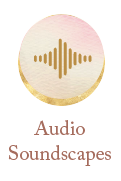

Portals to Lunarina
Here are the main features and media of the app.

Take the Journey.
Join our Facebook Group & connect with
other sisters in the Lunarina community
The Quest
We encoded symbolism in the very fabric of Lunarina temple. The journey you are about to take is full of mystery, revelations and accidental discoveries. We planted many pointers on your path in the form of art, sacred geometry, rituals, guided meditations and healing sounds, but ultimately the portal into the mystery lays inside your own body and it would be uniquely yours.
Lunarina Wombdial
Dive into the mystery of your body.
Meaning & Symbols
- Compass -each woman has an in-built internal compass guiding us towards best times to connect, create, make love, retreat, rest and reflect. In lunarina moondial, we use our uterus, our womb as a directing arrow and a key to life aligned with our divine feminine nature.
- Eye - represents our inner sight. By connecting to the rhythms of our bodies, the way we flow in time, the slightest shifts that occur within us we are able to develop intuition to live presently in the moment and see through the veil into the future cycles of our lives.
- Serpent - Kundalini energy-our potential
- Chalice - a portal receptivity
- Rose -
- Pentagram - is a shape Venus makes around the Sun in her 8 year journey descending from our visible horizon as an evening star, stationing beyond horizon for 3 days, and ascending as a morning star. This is a descend to the underworld of the oldest known deity Innana (Ishtar) and the collective experience of feminine energy that is now rising in our consciousness.
- Mirror
- Circle with a Circle
- Thirteen Phases of the Moon (twelve visible and one hidden)
Get your free Wombdial.
Join our community email list
you’ll receive a printable version of your own.
Discover your own path.
Lunarina enables you to piece together your own path. All of the guided meditations and yoga tracks are designed to be stand-alone as well as separate pieces of your journey. We also provide our recommended sequences based on themes, archetypes and sacred geometry. Everything is modular. Our intention is to build a playground for you to explore and give you enough tools to feel well-equipped..
Shop your senses
Add text here...